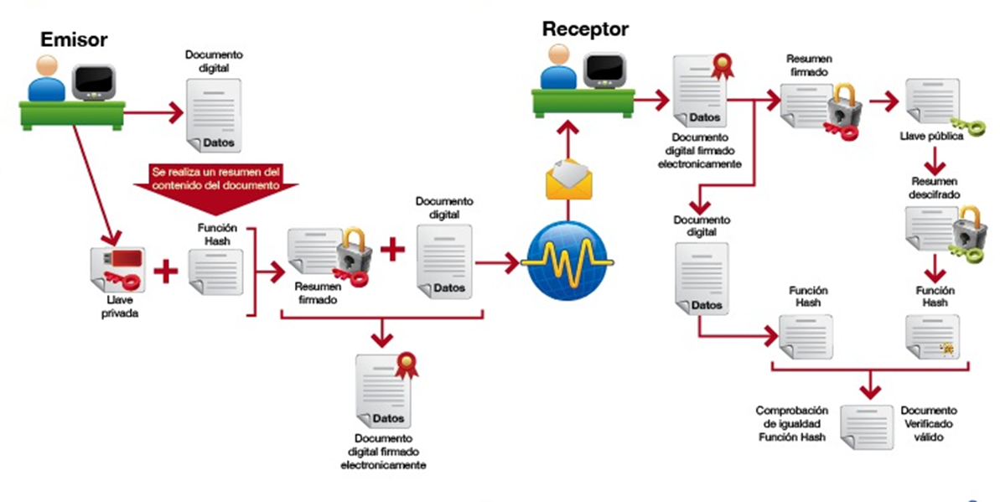

7.2.2 Firma digital
1. Introducción
La firma digital se usa para autenticar el origen de los datos y asegurar la integridad del mensaje. Su finalidad no es proporcionar confidencialidad ya que no se utiliza para cifrar los documentos completos si no un resumen del mensaje con una función hash, de esta forma las entidades pueden asegurar el origen de los datos.
Este tipo de firma electrónica está siendo adoptada progresivamente como una firma con validez jurídica. Ejemplo: la firma digital de la declaración de la renta presentada telemáticamente por Internet, se realiza mediante este sistema.
En el capítulo 6.1.6 de la unidad de trabajo, se describe que la función hash es un algoritmo matemático que permite calcular un valor resumen (message digest) de los datos a ser firmados digitalmente. No es reversible, es decir, no es posible, a partir del valor resumen, calcular los datos originales. Algunos ejemplos de algoritmos de hash son SHA, MD4, MD5, etc.
2. Funciones básicas
La firma digital proporciona pues los siguientes servicios:
- Autenticidad: Identificar al firmante de manera inequívoca.
- Integridad: Asegurar la integridad del documento firmado, es decir, el documento es igual al original y no se ha modificado.
- No repudio: Asegurar el no repudio del documento firmado dado a que los datos para firmar son únicos y exclusivos del firmante.
3. Régimen jurídico aplicable
La base legal de la Firma Electrónica está recogida en la Ley 59/2003 de Firma Electrónica y se desarrolla en más profundidad en la sección Base legal de las Firmas.
La sección también explora bajo qué circunstancias la ley equipara la firma electrónica a la firma manuscrita.

A escala Europea:
- Directiva 2000/31/CE del Parlamento Europeo u del Consejo, de 8 de junio de 2000, relativa a determinados aspectos jurídicos de los servicios de la sociedad de la información, en particular del comercio electrónico en el mercado interior ( directiva sobre comercio electrónico).
- Reglamento (UE) Nº 910/2014 del Parlamento Europeo y del Consejo, de 23 de julio de 2014, relativo a la identificación electrónica y los servicios de confianza para las transacciones electrónicas en el mercado interior y por la que se deroga la Directiva 1999/93/CE.
La legislación en vigor más destacada sobre la firma electrónica a escala europea y estatal es la siguiente:
Ley 34/2002, de 11 de Julio, de servicios de la sociedad de la información y de comercio electrónico.
Ley 59/2003, de 19 de Diciembre, de firma electrónica.
Ley 56/2007, de 28 de diciembre de Medidas de impulso de la Sociedad de la Información.
4. Tipos de firmas
Desde el punto de vista legal, la firma electrónica se define a través de tres tipos:
- Firma electrónica general.
- Firma electrónica avanzada.
- Firma electrónica reconocida.
Desde el punto de vista técnico:
- Firma básica.
- Firma fechada.
- Firma validada o completa.
5. Uso de la firma electrónica
Las aplicaciones prácticas de la Firma electrónica son:
- Firma de documento única.
- Firma de documentos por varios firmantes.
- Cifrado de datos.
- Presentar y liquidar impuestos.
- Gestiones en ayuntamientos, consejerías, etc..
6. Proceso de la firma digital
Se necesita tener:
- Documento a firmar.
- Claves asimétricas vinculadas a nuestra identidad por parte de un tercero de confianza.
Se necesita comprobar:
- Que la entidad emisora del certificado es de confianza.
- El certificado del titular no ha caducado.
- El certificado del titular ha sido emitido para ese propósito.
- El certificado del titular no ha sido revocado por su titular.
La firma digital de un documento es el resultado de realizar el siguiente proceso:
- Aplicar una función hash, a su contenido generando así un resumen irreversible.
- Aplicar el algoritmo de firma (como RSA o DSA y en el que se emplea la clave privada) al resumen, generando así la firma digital.
El destinatario, al recibir el mensaje:
- Calcula de nuevo el resumen mediante la misma función hash.
- Descifra la firma utilizando la clave pública del emisor y aplicando el mismo algoritmo de firma.
- Si ambos resúmenes coinciden, la firma es válida
En la siguiente figura, se ilustra el proceso de la firma digital:

Figura 1. Proceso básico de la firma electrónica.
Se necesita comprobar:
- Que la entidad emisora del certificado es de confianza.
- El certificado del titular no ha caducado.
- El certificado del titular ha sido emitido para ese propósito.
- El certificado del titular no ha sido revocado por su titular.
7. Comprobación de una firma electrónica
Se necesita conocer:
- El resumen del cifrado (documento firmado)
- Quien es la Autoridad de Certificación (CA) que emite el certificado.
- El tipo de función HASH aplicado (SHA-1, SHA-2)
- El algoritmo de cifrado utilizado (RAS, ...)
- El instante en el que se realizó la firma.
- La vigencia (no revocación) del certificado.
Si los códigos hash coinciden la firma es válida.
Ejemplos de firma de documentos.
Para firmar un documento, donde se tiene un documento a firmar (entrada) y se genera un documento firmado (salida).
#gpg -output doc.sig -sign doc
Con un documento con firma digital, el usuario puede llevar a cabo dos acciones:
1. Comprobar solo la firma:
#gpg -verify doc.sig doc
2. Comprobar la firma y recuperar el fichero original:
#gpg -output doc -decrypt doc.sig
8. VALIDe - Firmar y comprobar validez
VALIDe es una aplicación de validación de firma y certificados Online y demostrador de servicios de @firma. Además de determinar la validez de firmas y certificados digitales, se dispone de otras utilidades de valor añadido, entre las que se encuentran la generación y validación de firmas electrónicas o la demostración de servicios web de @firma, muy útil para desarrolladores e integradores de la plataforma.
Vídeo 1. Firma electrónica: Tutorial firmar documento con VALIDe Redsara.
Este portal permite firmar documentos si ya se tiene instalado AutoFirm@, además de validar una firma electrónica.
9. Aplicaciones de la firma digital
Actualmente la firma digital es un reemplazo de la firma manuscrita hasta el punto que tiene completa validez legal. Algunas de las aplicaciones más destacables de la firma digital son:
|
|
Obra publicada con Licencia Creative Commons Reconocimiento No comercial Compartir igual 4.0